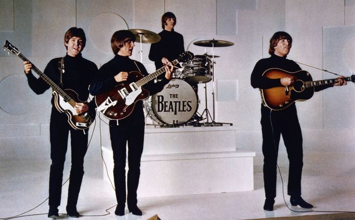

El rock es un amplio género de música popular originado como «rock and roll» a principios de la década de 1950 en Estados Unidos y, que evolucionaría en un gran rango de diferentes estilos durante mediados de los años 60 y posterior, particularmente en ese país y Reino Unido.Tiene sus raíces en el rock and roll de los años 50, estilo nacido directamente de géneros como el blues, el rhythm and blues, pertenecientes a la música afroamericana, y el country. El rock también se nutrió fuertemente del blues eléctrico y el folk, incorporando influencias del jazz y la música clásica, entre otras fuentes. Instrumentalmente, el rock se ha centrado en la guitarra eléctrica, normalmente como parte de un grupo integrado por batería, bajo, uno o más cantantes y, algunas veces, instrumentos de teclado como el órgano y el piano. Usualmente, el rock se basa en canciones en compás de 4/4 y una estructura verso-estribillo; sin embargo, el género se ha vuelto extremadamente diverso y las características musicales comunes son difíciles de definir. Como la música pop, las letras se centran a menudo en el amor romántico, pero también tratan un rango amplio de otros temas con un enfoque frecuente en lo social, lo personal y lo político. Fuente...
Hacer una lista de «Lo mejor de...» es algo peliagudo porque es una agrupación de sensbilidades que puede que hieran muchas sensibilidades a su vez. ¡Y si ocurre esto es un éxito, en realidad! Porque la función principal de una buena lista es despertar la discusión. Imaginad los mejores grupos de la historia del rock... En este caso, vamos con la famosa lista de la revista «Rolling Stone» que publicó allí por 2010 con los mejores grupos de la historia del rock, como hemos dicho. Claro, son los mejores, pero con un subrayadísimo sesgo anglosajón y que, evidentemente, no tenemos porque estar todos de acuerdo. Pero como siempre hay que decir, las listas son hijas de quienes las han hecho por lo que habrá siempre una divergencia de criterios porque por defecto es lo que suelen implicar. En esta que vamos a poner a continuación de «Rolling Stone» intentaron valorar la grandeza de las bandas en su momento como su influencia sobre otras.